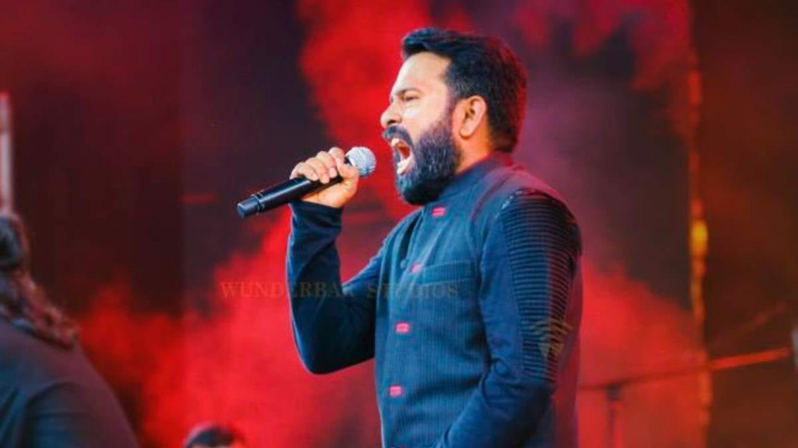

About SaNa
Santhosh Narayanan was born in Tiruchirappalli, India. He is the younger of two children. He was educated at RSK Higher Secondary School, Tiruchirappalli. Santhosh Narayanan completed his B.E., Computer Science & Engineering at J. J. College of Engineering and Technology, Thiruchirapalli. After completing his education, he worked as a recording engineer, arranger and programmer, before beginning to produce independent music and compose for films. He composed the music including two original songs for the Telugu short film Advaitham, He was also part of the contemporary folk music band "La Pongal" in which he performed in a few live shows in 2009.
.
Through Maniratnam, Santhosh also got to work on a couple of Rahman soundtracks starting with Guru.